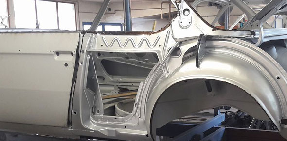
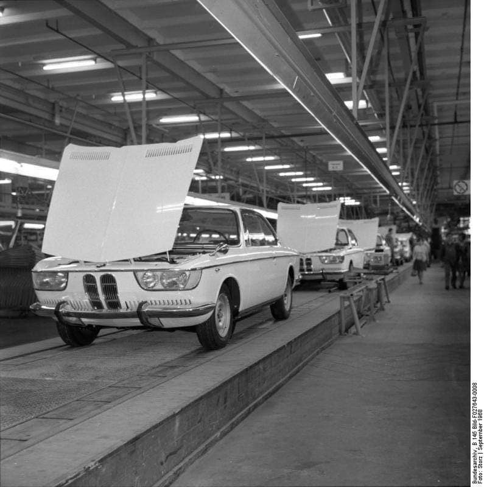
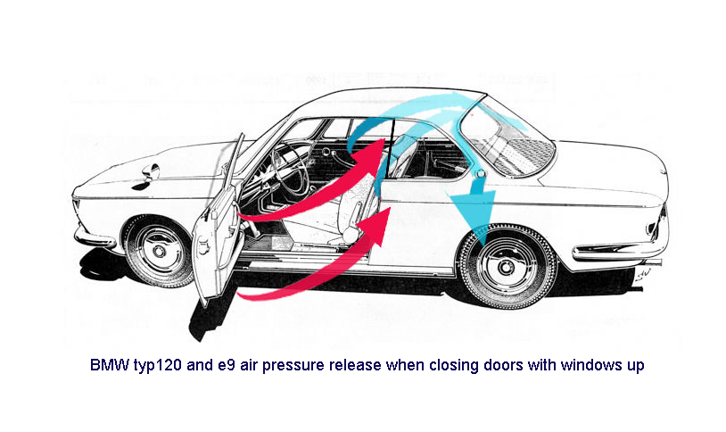
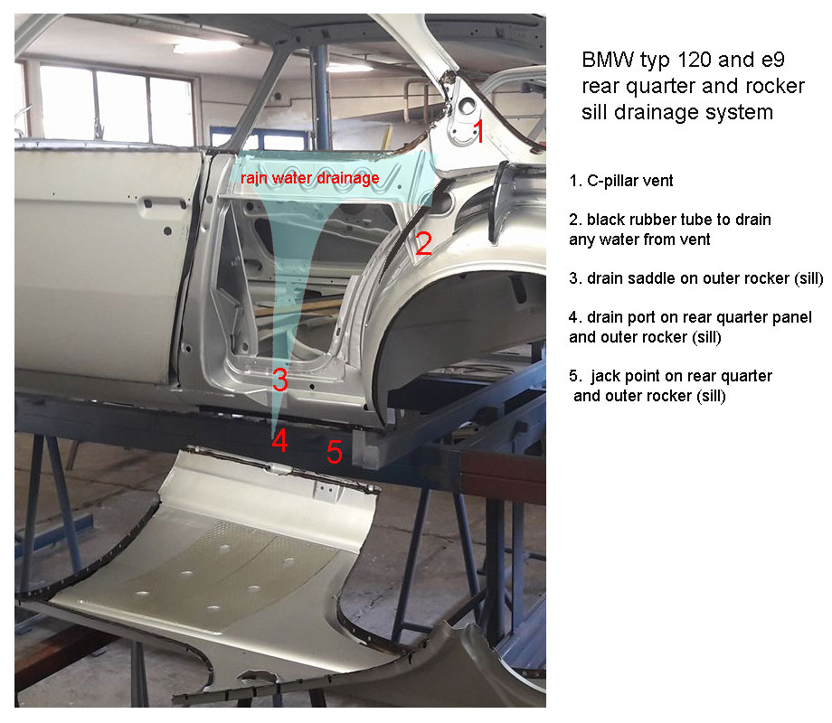
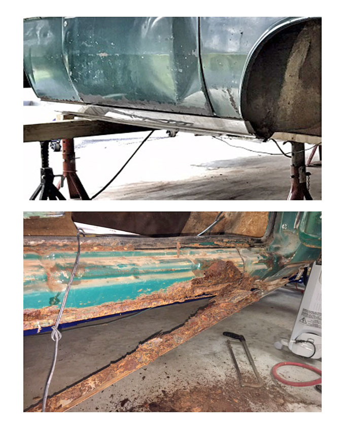
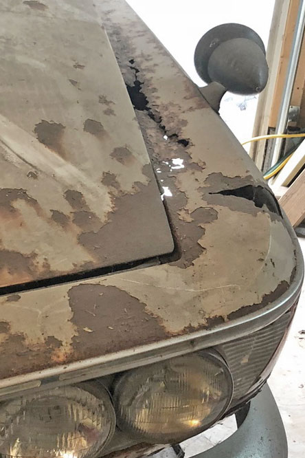

Understanding Karmann Construction (and Rust)
Karmann’s “Kiss of Death”
The BMW 2000c/cs typ120 is a Karmann coach-built car. Like many other Karmann builds such as the Volkswagen Karmann Ghia, the 2000c was built in a unique manner with structural support design and fabrication resulting in hidden compartments. These are hollow chambers found throughout the construction. The two most prominent areas for the 2000c are the rockers/pillars and the nose and front upper fenders. This is what I call Karmann’s “kiss-of-death” and is evidenced by the BMW 2000c/cs and the e9 2800/3.0cs models rusting and falling apart sometimes within 5 - 10 years of purchase depending on driving environment (the American northern “rust belt” states). Quite often the owner has no idea that his car is rusting and disintegrating right beneath him.

Hidden chambers - the Rockers
The typ120 and e9 have three rockers with a heavy gauge center rocker serving as backbone for the car. The A and B pillar bases are welded into this center rocker. This middle rocker and these pillar bases sit inside a hollow space. It is concealed by both an inner rocker you see on the inside of the car, and an outer rocker which is covered by decorative trim (stainless steel on the typ120 and black matte on the e9). The rear portion of the outer rocker is overlapped by the rear quarter panel from the door to the rear well. This is an inherently bad design in that it forms a tight seem prone to water intrusion from the rear window seals.
{kind=link}
Click on image for larger Image
Story Behind the C-Pillar Cloisonné Roundel Vent
The typ 120 and e9 C-pillar vent feature was introduced to equalize air pressure when one closes the car door. A hidden series of vents found above the rear greenhouse window with a channel leading to the C-pillar evacuates the air pressure caused by closing the door. By comparison, owners of BMW 2002s, which lacks this feature, may find that when they slam the door after getting in the car, that the rear quarter windows may bounce out (especially with worn hinge locks). Karmann designed a type of drainage system for any water intrusion into the vent. A rubber tube runs from the C-pillar vent (adorned with the BMW cloisonné roundel) to drain any water blowing up into the vent.
{kind=link}

Click on image for larger Image
The Pros and Cons of no Upper B-Pillar
One aspect of the typ120 and e9 that owners love is no upper B-pillar, thus a driver can lower all windows and have a more open feeling when driving. The drawback is that this does reduce structural support for the roof (this is the reason BMW retired the e9 design in 1974 based on US safety regulations), and it also lends itself for rain draining due to a reliance on window rubber seals alone. This in turn results in water drainage into the body cavity eventually settling into the rocker hollows and even worse seeping into that tight seem between the outer rocker and rear quarter skin. Karmann fabricated an inch-long drain port in the outer rocker and rear quarter base below the rear electric windows anticipating leakage.
{kind=link}

Click on image for larger Image (photo coutesy of Miklós Mészáros)
Many typ120 and e9s over the years have been placed on jacks or lifts at this drain point crushing it shut. When this happens, water will not drain from the rocker chamber. Water instead just sits in the hollows of the rockers. One telltale sign a typ120 or e9 is rusting from the inside out is when seeing an area of rust bubbles at the base of the rear quarter panel behind the door jam. This is where the rear quarter panel presses tight against the B-pillar base. Propsective buyers should carefully scrutinize the body rear quarter just above the rockers. Any minute rust could be the tip of a very big iceberg.
Rocker Covers Hold the Rust Together
There is a running joke among tenured BMW e9 owners "rocker covers hold all the rust in place to keep the car from falling apart". Many owners are blissfully unaware that their car is rusting away beneath them in part because the rocker trim is concealing the problem. My recommendations to anyone seeking to buy a typ120 or e9 is at a minimum ask to remove the rocker trim to see what is really going on. This is a hassle and sellers may resist, but if you are going to plunk down $10,000 on a car, you need to know if it is worth much less or reailly even worth buying.

Typ120 and e9 Severe Corrosion (A Wost Case Example)
{kind=link}
Click on image for larger Image
A Worst Case Example. This is an image of the rear quarter cut away on a 1968 2000cs to reveal catastrophic rust hidden beneath. This car was purchased new in 1968 in the state of Ohio in the rust belt of the U.S. Corrosion rendered the car unable to pass inspection due to structural instability by the mid-1970s. To the trained eye one can note that nearly all of the outer rocker (sill) has been eaten away. One can see the jagged edge of what remains of the top of the outer rocker. Further investigation shows that the middle rocker (sill) and the majority of B-pillar base have completely rotted away. Finally, an up close inspection shows that even the inner rocker is mostly rusted away. The floor pans (also heavily rusted) are barely clinging to fragments of the inner rocker and are only held in place where they are welded to the back bracing near the trunk. Much of the rust damage most likely started due to corrosive road salts and moisture washed up under the decorative rocker trim. Accelerating the rust was most likely due to degraded rubber electric rear window seals, and possibly a crushed drain port.
{kind=link}
Click on image for larger Image
The above image of the same 1968 BMW 2000cs from Ohio shows the front wheel area. All three rockers (sills) – inner, middle, and outer have completely rusted away. The images also shows that most of the A-pillar base is rusted away. Look closely and you will note the carpet and wiring harness exposed that runs from back to front on the floor inside the car and beneath the carpet. This rust is again a result of the notorious road salts evidenced in the cold winter regions of the U.S. Karmann designed a removable panel with a rubber gasket found inside the wheel well in front of the A-pillar. This panel really did very little to protect the rocker cavities in that it would rust and degrade. Some of this rust damage could also have been accelerated by a failing windshield rubber gasket as well.
Hidden Chambers - Front Fenders and Nose (Typ120)
The BMW 2000c/cs typ120 front fenders have a hollow chamber just beneath the top of the fender. The fender is welded over a substantial boxed bracing that runs the length of the engine compartment front to rear beneath the fender. This creates one inch gap and a shelf consisting of the hidden bracing which is welded to the engine compartment frame. One can run a hand up inside the fender and feel this ledge that is several inches deep.
Note in the image below with the right fender removed, one can see the boxed frame (with the now exposed area that forms this hidden shelf space). In this image you can also see another vulnerable hollow space that runs under the nose of the car from side-to-side. The third hollow space is the cavity exposed behind and beneath the headlight bucket. Interestingly, Karmann put yet another removable oval panel with rubber gasket seal in the front of the fender well whereby one could access this hollow cavity below the headlight buckets.
{kind=link}
Click on image for larger Image
{kind=link}
Typical of 1960s era German coach work and cars in general of that time, there is no screen or insert inside the fender. This is an invitation for tire cast off including water and corrosive road sediments to easily find a way up to that hidden shelf. One sure sign there is a serious rust problem is rust appearing on the upper fender.

Beginning in the 1980s, BMW along with all auto manufacturers began the practice of protecting fender well sheet metal with molded hard thick plastic inserts to protect against front wheel water and debris cast off. This simple innovation was a game changer in preserving auto bodies. Savvy BMW e9 owners have discovered that the 1974-1993 Volvo 240 series fender inserts are a near match for the e9s. Not so for the typ120 unfortunately.
Reflection on Buying a "Bargain" Karmann Coach Built BMW
{kind=link}
Click on image for larger Image
I bought my first Karmann built BMW typ120 in 2013. It is the 1968 2000cs noted above. I thought to myself “I’ve restored a BMW 2002; this shouldn’t be too different”. Alas, the Karmann built BMWs are entirely different than the typ114 (e10) BMW 2002s. If anything, BMW learned from the mistakes of the complex Karmann builds. Fellow BMW enthusiast Jason Gibson who sold me the 68 2000cs strongly urged me to buy the second typ120 he had rescued from oblivion, a 1966 2000c, which I did.
A first glance, the 66 2000c looked structurally rust free. Granted there was surface rust. This car spent most of its life in both Arizona and Oklahoma, both perfectly dry places with mild winters. The car met its demise mostly likely to a blown engine. See "Bringing Home a Broken Down, Busted Up, Rusted Out 2000 c"
In 2017 when I finally got around to disassembling the 2000c, I discovered some serious rust. Pulling back the carpets, I noted both rear floor pans rotted out. This most likely from the rear greenhouse window rubber gasket deterioration due to the harsh Arizona sun allowing for evemtual water intrusion. The rockers were covered with the decorative stainless-steel trim. When I removed the rocker trim, I discovered that the rockers were rusted. As I peeled back the layers of the onion, it just got worse and worse.
I was fortunate to live within a few miles of a very experienced e9 and typ120 restoration expert, Tom Barauch. Tom mentored me on how to lift away the lower rear quarter panel and lower front fender overlapping the rockers. Cutting away the rotted portions of the outer rocker, I discovered significant damage to the pillar bases and the middle rocker. See "September 2017 Rocker Removal".
Here is the catch. The damage was within my abilities as a hobbyist welder and fabricator. With Tom’s guidance and new sheet metal from Wallothnesch I rebuilt the rockers and the pillar bases without having to disassemble the car. Just barely. See "October 2017 Rocker Replacement" and "March 2018 Rocker Replacment".
If the rocker or sills had rusted any further, I would have been faced with the prospects of significant disassembly and having to build a “jig” which is a robust welded steel framework to place the shell of the car on. The jig is based on precise proportions of a typ120 or e9 when structurally integrity is removed. With these cars much of the structure builds up from or is ties into the rocker or sill as a baseline.
{kind=link}
click to enlarge image
{kind=link}
(photo coutesy of Miklós Mészáros)
This is why restoration costs for e9s or typ120s average about $100,000 and experienced shops are hard to find. These cars are aguably one of the toughest vintage cars to restore. This is also why people do not bother restoring typ120s. They are just not worth the investment.
I have been plugging away on this 66 2000c for 3 years averaging 20 hours per week. Granted, a lot of this is learn-as-you-go. Regardless, my level of restoration effort at an experienced shop would still run about $50,000. Some days I ask myself if it is really worth it. Then I think to myself "well, you dug pretty deep, don't stop now".